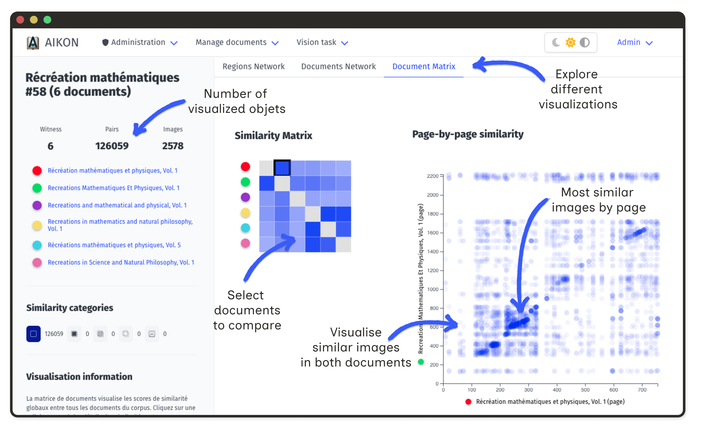
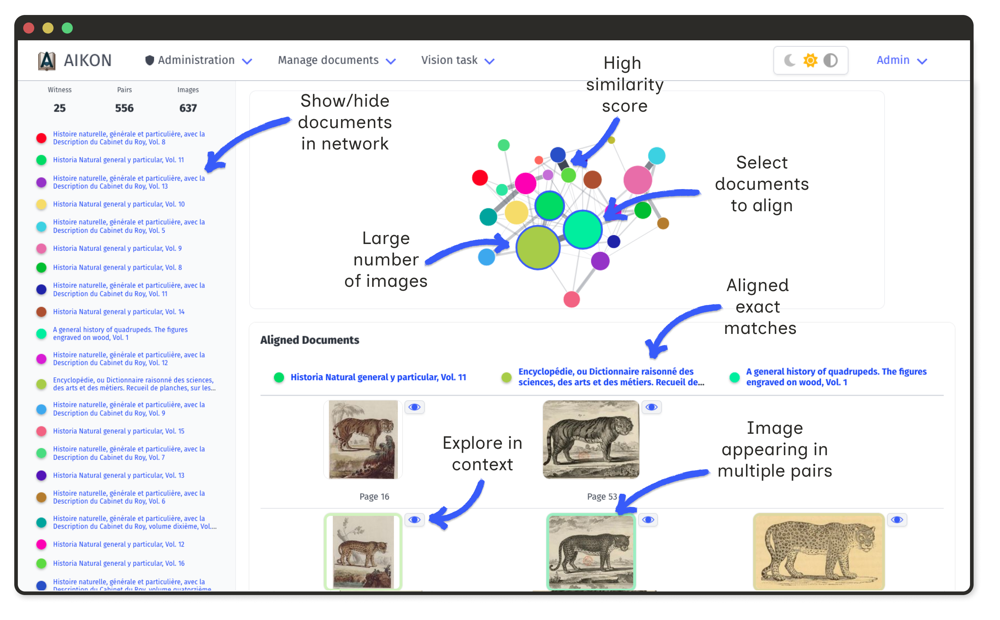
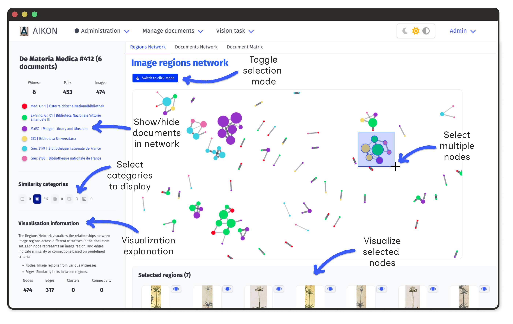

AIKON provides visualization interfaces to help researchers examine transmission networks and circulation patterns across corpora.
Document set visualizations aggregate similarity data across multiple witnesses. These tools help identify document relationships.
All visualizations support filtering:
Document set clusters group images that are linked by at least on pair of similarities whose score exceeds the selected threshold.
The similarity matrix shows pairwise document comparisons. Color intensity indicates the number of similar regions between documents.

Click on a cell to open a detailed matrix for that document pair. Axes show ordered illustrations; intensities reflect similarity ranks or annotations.
This view reveals whether copied illustrations maintain their original order, appear clustered in specific sections, or follow reorganization patterns.
Documents appear as nodes in an interactive graph. Edge width corresponds to the number of shared regions. Node size reflects connectivity.

Select nodes to display a table of all connected regions. This makes it easy to identify visual shifts, such as systematic mirroring.
At the region level, the network displays all extracted regions from a document set. Nodes represent individual regions; edges represent correspondences.

Large nodes indicate commonly copied images. Isolated nodes represent unique illustrations.
The stemma editor allows users to try different ways to connect document within the set and test their hypothesis by looking at regions of interest of the documents through several visualization tools.